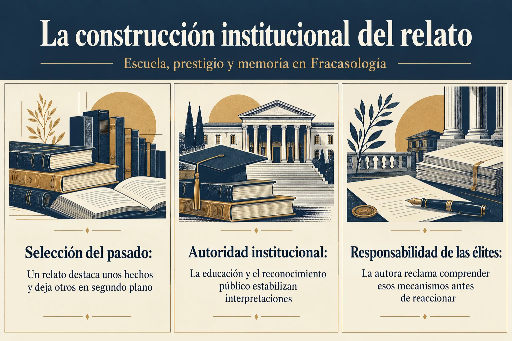

Volumen 4 · Capítulo 12 · Entrega 50
La historia autonómica y el hecho diferencial
Estudio expositivo de Fracasología de María Elvira Roca Barea
La historiografía autonómica es presentada por Roca Barea como un medio de legitimación de estructuras políticas existentes y de ampliación de sus aspiraciones. Su crítica se refiere a una orientación que considera predominante, aunque reconoce excepciones: buscar en el pasado las pruebas de la singularidad de cada territorio y conceder mucha menos atención a los procesos de integración o a las ventajas de la unidad. La historia deja entonces de funcionar únicamente como investigación y se convierte en un recurso de justificación institucional. El hecho diferencial proporciona la pregunta y, con frecuencia, el resultado esperado.
El ejemplo de la Guerra de Sucesión recupera el punto de partida del primer volumen. Roca Barea comenta una versión de una entrada de Wikipedia consultada en marzo de 2018, donde el conflicto se explicaba mediante la oposición entre coronas y se asociaba el desenlace al final de un modelo federal o compuesto de monarquía. La autora objeta esa lectura por su capacidad de proyectar sobre la organización anterior una interpretación útil al presente autonómico. Su atención se dirige menos a una palabra aislada que a la secuencia que hace posible: una pluralidad originaria habría sido destruida y su restitución futura adquiriría la apariencia de reparación histórica.
En este punto vuelve el papel de los marcos importados. La teoría de la monarquía compuesta, procedente del hispanismo británico, habría sido adaptada para sostener un horizonte de relación asimétrica entre territorios. Según Roca Barea, la autoridad académica exterior y la utilidad política interior se refuerzan. La crítica prolonga un mecanismo observado antes en el afrancesamiento y en la recepción de Weber: una explicación prestigiosa puede incorporarse sin suficiente examen cuando coincide con la necesidad de conferir legitimidad a una posición propia. El ensayo impugna ese uso; no se realiza aquí una evaluación general de toda la investigación sobre monarquías compuestas.
La enseñanza escolar introduce una dimensión cotidiana. La autora examina un manual de Geografía e Historia de tercero de ESO dedicado a Andalucía y atiende a la distribución de títulos, páginas y denominaciones. Frente a una presencia reiterada de Andalucía, observa una menor visibilidad de España y un predominio de la expresión Estado español. Su argumento es que también las omisiones educan. La comunidad común puede desaparecer del campo de atención sin necesidad de una descalificación explícita, mientras la región ocupa un lugar permanente como sujeto de los problemas, las políticas y las expectativas de desarrollo.
Roca Barea no atribuye el problema a una editorial determinada. Declara que las empresas producen los materiales que demanda el sistema y extiende su objeción al conjunto de la organización educativa. Esta precisión cambia el lugar de la responsabilidad: la cuestión no se resolvería reemplazando un libro si los incentivos y los criterios institucionales permanecen iguales. La autora describe una cadena que une universidad, administración y escuela. La estructura política promueve una representación del pasado y del presente que contribuye a su propia continuidad y a la expansión de sus funciones.


Ampliar imagenLeer el esquema y sus referencias
- Selección del pasado. Un relato destaca unos hechos y deja otros en segundo plano
- Autoridad institucional. La educación y el reconocimiento público estabilizan interpretaciones
- Responsabilidad de las élites. La autora reclama comprender esos mecanismos antes de reaccionar
Fuente de lectura: Roca Barea, Fracasología (2019), apartado desarrollado en la entrega 50. Esquema expositivo de la interpretación de la autora; no cita literal.
El capítulo insiste en el carácter transversal del proceso. Las autonomías menos secesionistas seguirían la dirección marcada por las más activas para evitar una posición comparativamente inferior. La denominación de ciudades, la visibilidad de los gentilicios y la sustitución de España por expresiones alternativas son ejemplos que Roca Barea utiliza para mostrar que esa dinámica no depende únicamente de gobiernos nacionalistas. Por eso interpela también a la derecha y a la izquierda estatales. El mecanismo que le interesa es la convergencia práctica de organizaciones que pueden enfrentarse en el debate ideológico mientras sostienen una misma ampliación de poder territorial.
En el tramo final aparecen conflictos de 2018 y 2019 que la autora reúne bajo el problema de la reputación exterior. Menciona la utilización de recuerdos de la furia española en Flandes, el caso Puigdemont y actuaciones judiciales alemanas, así como relaciones entre instituciones académicas extranjeras y organismos autonómicos. Interpreta la financiación y el reconocimiento universitario como vías para orientar el relato internacional sobre España. Los juicios sobre intenciones, complicidades y efectos pertenecen a su diagnóstico; el volumen no los convierte en conclusiones judiciales ni los actualiza a acontecimientos posteriores.
La carta de López Obrador al rey de España sirve para ampliar el escenario al mundo hispano. El libro ve una continuidad entre la disputa territorial, la condena del pasado imperial y el cuestionamiento de la legitimidad presente. La dificultad principal sería la ausencia de una respuesta capaz de comprender los mecanismos antes de reaccionar. De nuevo la carga recae sobre las élites: sus cargos y ventajas implican responsabilidades de análisis y actuación. El capítulo termina señalando que, cuando no las cumplen, la sociedad debe dedicar un esfuerzo extraordinario a compensar ese abandono. El caso de California permitirá examinar con mayor detalle cómo se selecciona un pasado condenable y qué otros pasados quedan fuera del foco.
Referencia de la entrega y criterio de lectura
Roca Barea, 2019, cap. 12, «La historia autonómica: el culto al hecho diferencial», desarrollo final del capítulo.
El texto reconstruye el argumento de Roca Barea. Las alusiones a otras obras proceden del ensayo y no implican la consulta independiente de todas ellas. Criterio editorial de la colección.
Referencia de la entrega. Roca Barea, 2019, cap. 12, «La historia autonómica: el culto al hecho diferencial», desarrollo final del capítulo.